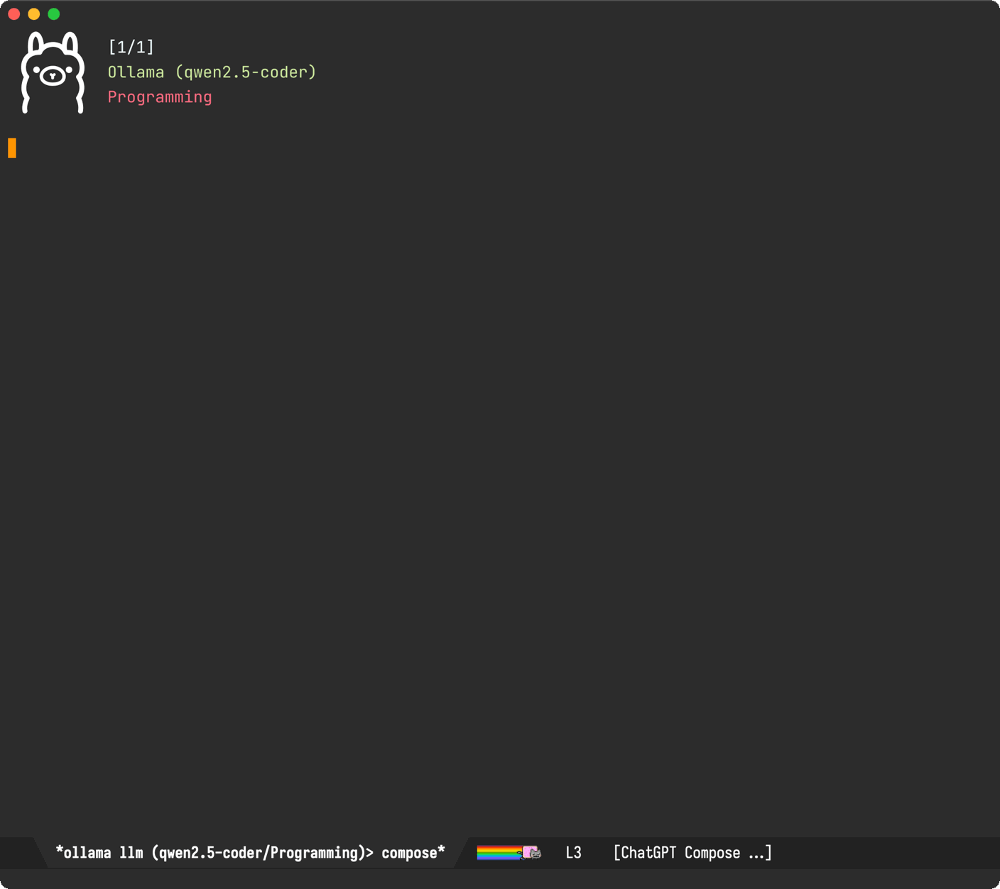

Álvaro Ramírez
LLM text chat is everywhere. Who’s optimizing UX?
When it comes to programming LLM tools, I've seen modes of interaction in the form of code completion, patch application, improvement suggestions, and text chat amongst others. Text chat is everywhere.
In the context of text chat UX, I haven't really come across huge differentiators across offerings. That's not to say they don't exist. The landscape moves fast and there are far too many products out there for me to check out, thus my question to you is…
Who's optimizing or innovating LLM text chat UX?
While there are plenty of new agents and model capabilities that are interesting in their own right, in the context of chat UX, I'm more interested in finding your favorite UX features. What are they? What do you love about them? Why? Do they feel like they reached or are close to reaching an optimal experience? On the other hand, what do you find that's rough about them? Tiny friction here and there? I'd love to know: Mastodon / Twitter / Reddit / Bluesky.
Chat as a shell, is it keyboard optimized?
Back in 2023, I released the first version of chatgpt-shell. To me, LLM chats felt like the perfect candidates to be implemented as shells. After all, aren't they just REPLs of sorts?
- Reads user input
- Evaluates the input
- Prints the result
- Loops back to read more input
While this mode of LLM interaction served me well for some time, I couldn't shake the feeling there were tiny improvements to be made to shed a little friction here and there.
TAB navigation
Not all LLM output is equal. I want to quickly jump to more interesting items like code blocks or links (via keyboard of course). Sure, I can search to navigate around, but don't we have better patterns already? Don't we often just TAB our way around apps and web pages?
With that, I added TAB and Shift-TAB navigation to chatgpt-shell.
Editable vs read-only (why not both?)
Most LLM text chat interfaces I've come across are made up of two components: the input text-box and the history of input requests along with their corresponding LLM outputs. While using the text-box, keyboard shortcuts are somewhat limited to modifier key shortcuts. I'd love to have a richer menu of options available or ways to quickly ask for things, without explicitly having to request a different interaction mode nor a menu of sorts. Circumstances aren't that different in a shell when you have to switch between character and line mode. In a way, the clunkiness intensifies when you'd like to input multi-line text through your shell. You better watch out for that muscle memory and avoid pressing enter prematurely while you intended to add a newline… Too late. Your incomplete request is already on its way.
With all this in mind, it's easy to dismiss shell foundations given their quirks. The thing is, we don't have to throw the baby out with the bathwater. What we need is a veneer of sorts, automatically switching between edit and view mode just when you need it.
Reducing history noise
While I want to have access to my LLM chat history (ie. the context), I'm hardly ever interested in seeing anything but the last LLM response. An always-present history feels like constant noise to me. If I want to see the history, I'd like to actively ask for it. Remember that veneer of sorts? Well, can't it act as viewport too? …showing me only the very last response. Want access to previous entries? Well, can act as a pager too. One interaction per page (request/response), but if I really want to open the history floodgates, just give me access to the "raw" shell… and so I started experimenting with pagers of sorts.
One chat interface to rule them all
With my initial chatgpt-shell implementation, I envisioned multi-model chat support would be possible by isolating shell logic into a separate package (shell-maker) and let folks build whichever LLM chat they'd like (adding support for their favorite model).
While new shells started popping up here and there, I didn't foresee minor shell UX differences affecting general user experience. Learning the quirks of each new shell felt like unnecessary friction in developing muscle memory. I also became dependent on chatgpt-shell features, which I often missed when using some of the other shells. In the end, I bit the bullet and made chatgpt-shell go multi-model.
Tying it all together
TAB navigation, a smart veneer, a viewport, paging, optional access to chat history, a transient menu, a single interface driving different models, and a bunch of other tweaks currently make up chatgpt-shell's compose experience, available via Emacs's M-x chatgpt-shell-prompt-compose command or my preferred key binding: C-c C-e.
Today, I bring another tweak. Compose buffers get a brand new header presenting all relevant shell details including model and paging information.

The new compose header is now available in the latest MELPA package version. Invoke M-x chatgpt-shell-prompt-compose and off you go.